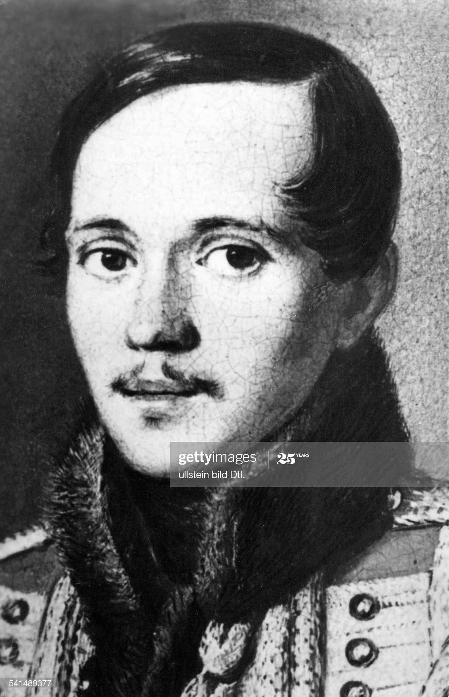

|

|
He has been born for hopes and for joys,
For inspirations peaceful! -- But, a crazy,
He early left the world of fairy tales and toys
And threw his heart in a sea of high life, hazy.
God did not saved him from the world at once!
Thus a ripe fruit, which early had matured,
Midst flowers it hangs, an orphan poor,
And does not satisfy nor any test, nor eyes;
The time of their bloom is one when he dies!
A greedy worm is gnawing him through,
And while the girlfriends, so sweet and gentle,
Are swaying on a branch -- the early fruit
Just pulls the own one -- until the winter enters!
It's awful to be old, without a grayish tingle:
He does not find the peers; in a crowd,
He goes, leaving locked his soul proud
Just not a slave nor a king, with other people mingled,
And all that he there feels, he ever feels a single!
Translated by Yevgeny Bonver, November, 2000
|